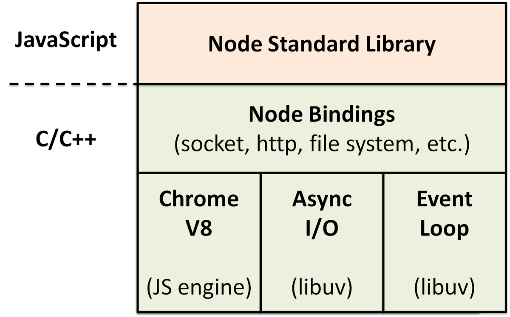
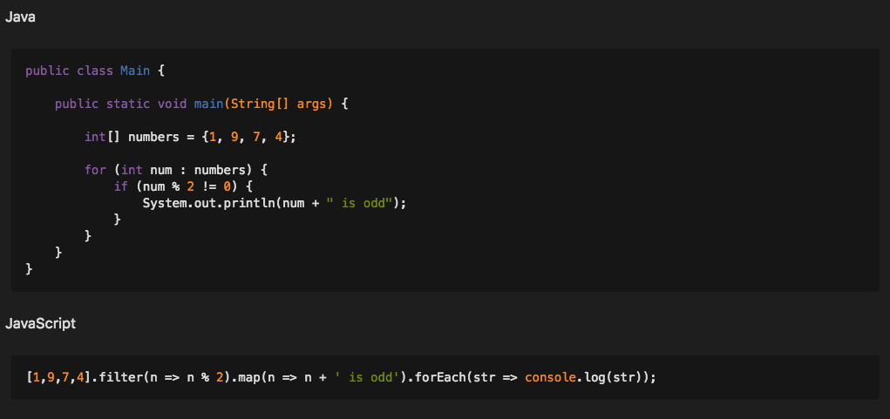
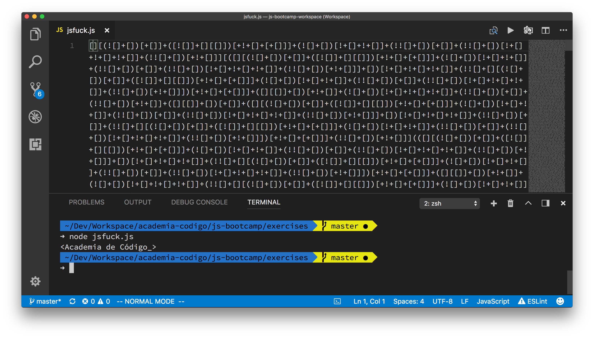
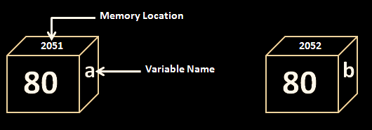
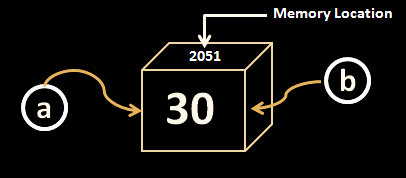

High-level, dynamic, weakly typed, prototype-based, multi-paradigm, and interpreted programming language
...but more importantly...
High-level, dynamic, weakly typed, prototype-based, multi-paradigm, and interpreted programming language
It is deployed as source code and it is an essential part of the Web platform
AKA ECMAScript, ECMA-262, ES
International standard that defines JavaScript
Developed by Technical Committee 39 (TC-39)
Issued as Ecma-262 and ISO/IEC 16262
The first JavaScript engine was created in 10 days by Brendan Eich at Netscape for the Netscape Navigator Web browser
The engine was code-named SpiderMonkey, implemented in C and still used in Firefox newest Quantum browser
Platform built on Chrome's V8 JavaScript engine and using an event-driven, non-blocking I/O model that makes it lightweight and efficient
| Good Stuff | Bad Stuff |
|---|---|
|
|
The expressiveness of JavaScript provides an enormous amount of power. Even though the language lacks certain useful built-in features, its flexibility allows you to add them yourself... Ross Harmes, Dustin Diaz in Pro JavaScript Design Patterns
It is possible to write any JavaScript code with only 6 chars

Many people start writing JavaScript
without taking the time to learn the language...
... but when you need to know what you are doing!
A primitive value is an immutable piece of data that is represented directly at the lowest level of the language implementation
| Type | Values | Size | Comments |
|---|---|---|---|
| Undefined | undefined | used when a variable has not been assigned a value | |
| Null | null | value that represents the intentional absence of any object value | |
| Boolean | true, false | 1 bit | |
| String | 'A/C', "A/C" | length * 2 bytes | finite ordered sequence of zero or more 16-bit unsigned integer representing UTF-16 characters |
| Number |
-1.5, -1, -0, 0, +0, 1, 1.5
-1.7976931348623157e+308 1.7976931348623157e+308 -Infinity, +Infinity, NaN |
8 bytes |
double precision 64-bit binary format
IEEE 754-2008 value plus additional symbolic values for infinity and not-a-number |
There are the three types of variable keywords in JavaScript: let, const and var.
They can hold any type of data, whether it’s a primitive type or a reference to an object.
//You can assign any type of data to both variables
let a = "a";
const c = "c";
//But you can't reassign c...
a = 5;
c = 10; //TypeError: invalid assignment to const 'c'
Back when JavaScript was first created, the
var
keyword was the only way to declare variables. The
design of var is confusing and
error-prone.
So which one should I choose?
The interpreter assigns variables a type at runtime based on the variable's value at the time.
let bootcamp = 10; // bootcamp is a Number
bootcamp = "Lisbon"; // bootcamp is now a String
bootcamp = true; // bootcamp is now a Boolean
bootcamp = { edition: 10, city: "Lisbon", running: true }; // bootcamp is now an Object
typeof operator returns a string indicating
the type of the value
console.log(typeof bootcamp); // prints "object" to the console
Traditionally the way of creating strings in javascript would be using either single quotes (') or double quotes (").
const name = "Pedro";
const greeting = "Hello " + name + "my 'friend'!";
console.log(greeting); // Hello Pedro my 'friend'!
console.log(typeof greeting); // string
Introduced in ES6, string templates provide interpolation, giving us a lot more control over creating strings
let name = "Pedro";
let greeting = `Hello ${name}!`;
console.log(greeting); // Hello Pedro!
console.log(typeof greeting); // string
A great benefit of interpolated string literals is they are allowed to span across multiple lines.
let test = `Blessed is he who, in the name of charity and goodwill,
shepherds the weak through the valley of darkness,
for he is truly his brother's keeper, and the finder of lost children.
And I will strike down upon thee with great vengeance
and furious anger those who attempt to poison and destroy my brothers.`;
console.log(text);
The line breaks in the interpolated string literal are preserved in the string value
A JavaScript object can be looked at as a simple collection of Properties
Objects implement a Map Data Structure, where properties are containers that hold primitives or other objects
const speed = "10";
const computedProp = "hand break";
const obj = {
a: 42,
b: true,
c: {},
speed,
[computedProp]: true,
};
obj.a; // 42
obj.b; // true
obj["c"]; // {}
obj.speed; //10
const key = "d";
obj[key] = "Code for All_";
obj.d; // 'Code for All_';
obj[computedProp]; //true
obj["hand break"]; //true
Everything that is not a primitive is an Object
This includes Functions and Arrays!
Objects can have properties read or written to, as well as new ones added or removed dynamically
const newObject = {};
// 1. Dot syntax
newObject.someKey = "Hello"; // create a new property if non existent and update value
const value = newObject.someKey; // get property value
// 2. Square bracket syntax
newObject["someKey"] = "Hello"; // create a new property if non existent and update value
const anotherValue = newObject["someKey"]; // get properties
// 3. delete property
delete newObject.someKey;
Variables can hold the actual values of primitives types or references to objects
let a = 80; // a holds the value of 80
let b = a; // b holds the value of 80
let a = { n: 80 }; // a holds a reference to the object
let b = a; // b holds a reference to the same object
console.log(a.n); // 80
console.log(b.n); // 80
a.n = 100;
console.log(a.n); // 100
console.log(b.n); // 100


Primitives are immutable and have no methods, but JavaScript has the Boolean, Number and String objects that wrap around primitive values
const str = "this is a string primitive";
typeof str; // 'string'
// due to implicit coercion of string to a wrapper object,
// we can invoke methods on it
console.log(str.toUpperCase());
// the new operator is the way to instantiate wrapper objects
const strObject = new String(str);
typeof strObject; // 'object'
const strPrimitive = strObject.valueOf();
typeof strPrimitive; // 'string'
Wrapper objects are immediately destroyed after their use!
Powerful high-level list-like objects, containing methods to perform traversal and mutation operations
let arr = [ 1, 'fine', true ];
arr[3] = { name: 'Neo', chosenOne: true };
console.log(arr[0]); // 1
console.log(arr[1]); // 'fine'
console.log(arr[2]); // true
console.log(arr[3]); // { name: 'Neo', chosenOne: true }
typeof arr; // 'object'
arr[999] = null;
arr.length; // 1000
typeof arr[10]; // 'undefined'
Neither the length of an array nor the types of its elements are fixed
Unpacks selected values from arrays, or properties from objects, into distinct variables
const data = [{ name: "Sérgio", hobby: "programming" }, "www.codeforall.org"];
const [user, url] = data;
console.log(user.name); // Sérgio
console.log(user.hobby); // programming
console.log(url); // www.codeforall.org
It's really useful when you want to discard some
properties from objects
const obj = {
name: "Rui",
hobby: "surf",
};
// Discarding non interesting properties form objects is easy
let { name } = obj; // don't really care about hobbies...
console.log(name); // Rui
Converting a value from one type to another is called casting when done explicitly, and coercion when done implicitly
Type Coercion in JavaScript can be magical...
... but also evil, confusing and sometimes a
really bad idea!
1 + 2 + '3'; // '33'
1 + '2' + 3; // '123'
1 + true + true + false; // 3
true + '1'; // 'true1'
1 + ''; / '1'
'5' * 3; // 15
'5' * false; // 0
2 / '2'; // 1
2 / 'a'; // NaN
2 + null + ''; // '2'
null + true; // 1
// All of these evaluate to 'true'!
console.log(false == '0');
console.log(null == undefined);
console.log(" \t\r\n" == 0);
console.log('' == 0);
console.log([] == 0);
console.log(0 == '0');
// And these do too!
if ({}) // ...
if ([]) // ...

In JavaScript,
functions are ordinary objects with the
additional capability of being callable
function foo() {
return 42;
}
function baz() {}
foo.bar = "hello world";
typeof foo; // "function"
typeof foo(); // "number"
typeof foo.bar; // "string"
typeof baz(); // "undefined"
function foo(a) {
console.log(a + 1, arguments);
return 2;
}
// Can you guess what is the output?
foo();
foo(1);
foo('ey');
var b = foo(1,2,3);
console.log(b);
Arrow functions are a shorter syntax for writing function expressions
// All of these arrow functions are valid
const multiply = (a, b) => a * b;
const square = a => a * a;
const print = () => console.log('Hello World');
const sum = (a, b, c) => {
const result = a + b + c;
return result;
};
The arguments object is not available with
arrow functions
Syntax to bind an object property to a function to be called when there is an attempt to get or set the property
let person = {
firstName: "Rui",
lastName: "Ferrão",
get fullName() {
return this.firstName + " " + this.lastName;
},
set fullName(value) {
[this.firstName, this.lastName] = value.split(" ");
};
console.log(person.fullName); // Rui Ferrão
person.fullName = "Pedro Antoninho";
console.log(person.fullName); // Pedro Antoninho
Default function parameters allow formal parameters to be initialized with default values if no value or undefined is passed
function bar(x = 10, y = 30) {
return x + y;
}
console.log(bar(5, 6)); // 11
console.log(bar(5)); // 35
console.log(bar(0, 1)); // 1
console.log(bar()); // 40
When used as a function argument, it will gather the rest of the arguments into an array
function foo(a, ...args) {
console.log(a); // 1
console.log(args); // [2,3,4,5]
}
foo(1, 2, 3, 4, 5);
When used in front of an array it will spread out into its individual values
function foo(a, b, c, d, e, f) {
console.log(a, b, c, d, e, f);
}
const values = [1, 2, 3, 4, 5];
foo(...values); // 1 2 3 4 5
let characters = [
{ name: "John", email: "john_the_one@gmail.com", age: 18 },
{ name: "Diane", email: "princess.diane@gmail.com", age: 43 },
{ name: "Snoop", email: "hip-hop@gmail.com", age: 4 },
{ name: "Ice T", email: "OG_ice@gmail.com", age: 14 },
{ name: "Vanilla Ice", email: "wannabeIce@gmail.com", age: 216 },
{ name: "Eminem", email: "theOne@gmail.com", age: 17 },
];
const criteria = {
age: 18,
email: "gmail.com",
};
The region of the program where a binding between
a variable and its name is valid
JavaScript has support for static lexical scope only
Variable scope depends on its position on the
source code
// a global definition of animal
let animal = "Horse, ";
function mammal() {
// a local animal variable
let animal = "Dog, ";
}
mammal();
animal += " a mammal with four legs";
// Dog or Horse?
console.log(animal);
Variables in JavaScript can have either Global or Local scope
Local variables exist only within the
function body
of which they are defined
function animal() {
const dog = 'Dob'; // accessible inside animal function only
}
console.log(dog); // bad things will happen
Notice that using const and let the local scope is bound to the block. That wasn't the case before ES6 when only var existed. When using var the local scope will be bound to the function.
Global variables live throughout the entire execution
of the runtime
and can be accessed and altered
in any scope
let dog = "Dog"; // global definition of dog
function animals() {
console.log(dog); // access to global dog
badAnimal();
console.log(rabbit); // access to global rabbit
}
function badAnimal() {
rabbit = "rabbit"; // rabbit leaked into the global scope
}
animals();
Variables defined outside a function or without the const or let keyword will be bound to the Global Scope
JS contains a strict mode, causing the interpreter to check and scream at evil things such as implicit globalsContrary to other programming languages, JavaScript does not have a standard library, but it does come with a few built in objects available
const date2 = new Date("December 17, 2017 03:24:00");
const date1 = new Date.now(); // time in milliseconds since the UNIX epoch
const func = new Function("console.log('A/C');");
func(); // prints A/C in the console
new RegExp("^a.*c$").test("abasdfffc"); // true
/^a.*c$/.test("abasdfffc"); // equivalent literal notation
Math.ceil(Math.random() * 10); // calculates a random number between 1 and 10
const obj = { a: "1", b: "2" };
const keys = Object.keys(obj); // [ 'a', 'b' ]
Variable declarations are always processed before any code is executed
sayHello();
function sayHello(){
console.log('This function declaration was hoisted, so it can be invoked before...');
}
Notice that variables declared with const, let and var will be hoisted but not initialized.
console.log(age); // undefined
age = 18;
var age;
name = "Rui"; // this will result in a ReferenceError
let name;
hobby = "surf"; // SyntaxError
const hobby;
In javascript everything that isn't a primitive is
an object.
Since you can store an object in a variable
...
and a function is also an object...
// functions can be stored in variables
const sayHello = function () {
console.log('Hello codecadet welcome to my function');
};
sayHello();
// and also in objects
const greeter = {
talk: sayHello,
};
greeter.talk();

Functions that operate on other functions, either by taking them as arguments or by returning them, are called higher-order functions
// build a multiplier by 2 and store it
// in the variable named double
const double = multiplier(2);
// use it to double some numbers
console.log(double(5)); // 10
console.log(double(3)); // 6
// builds a new multiplier
function multiplier(operand1) {
return function (operand2) {
return operand1 * operand2;
};
}
callback is the name given to these functions on which higher order functions operate.

A function expression can be invoked immediately,
many times useful to avoid global scope
pollution
// this function will execute immediately
// extra parentheses are required to tell the interpreter
// this is a function expression and not a declaration
(function (str) {
const name = str;
})("sting");
console.log(name); // not available
Arrays can be used as a stack...
const stack = [];
stack.push(1);
stack.push(2);
stack.push(3);
stack.pop(); // 3
stack.pop(); // 2
stack.pop(); // 1
stack.pop(); // undefined
shift and unshift also work
...or as a queue
const queue = [];
queue.push(1);
queue.push(2);
queue.push(3);
queue.shift(); // 1
queue.shift(); // 2
queue.shift(); // 3
queue.shift(); // undefined
pop and unshift also work
Arrays contain their own sort method,
just provide them with a
compare function!
An array can be populated
with contents from a String...
const sentence = 'JavaScript is a lot of fun!';
const words = sentence.split(' ');
console.log(words[5]); // 'fun!'
...and a String generated
from the elements of an Array
const numbers = [1, 9, 7, 4];
const year = numbers.join("");
console.log(year); // '1974'
A shallow copy of an array portion can be created...
const animals = ['ant', 'bison', 'camel', 'duck', 'elephant'];
animalsSlice = animals.slice(2, 4);
console.log(animalsSlice); // ['camel', 'duck']
console.log(animals); // has not been changed
...or elements can be added or removed from it
const myFish = ['angel', 'clown', 'mandarin', 'sturgeon'];
myFish.splice(2, 1);
console.log(myFish);
const words = ['JavaScript', 'Bootcamp', 'Fun', 'Games'];
// you can break early from a for loop
for (let i = 0; i < words.length; i++) {
if (words[i] === 'Fun') {
break;
}
console.log(`${words[i]} has ${words[i].length} letters.`)
}
// improved readability, but not possible to break early
words.forEach(word => console.log(`${word} has ${word.length} letters.`));
It is possible to iterate on an object by obtaining an array with its keys
const obj = { a: 1, b: 2, c: 3};
Object.keys(obj).forEach((key) => console.log(`Value of key ${key} is ${obj[key]}`));
The functional style can make code much cleaner and easier to maintain, although some performance penalty is paid
// apply a filter function to an array, obtaining the older persons
const people = [
{ name: "Rui", age: 43 },
{ name: "Pedro", age: 29 },
];
const old = people.filter((person) => person.age > 40);
// apply a transform function to an array, transforming each element in the array into its square root
const numbers = [1, 4, 9];
const roots = numbers.map(Math.sqrt); // [1, 2, 3]
// reduce an array to one single value, the total number of characters in the array
const animals = ["cat", "dog", "fish"];
const letters = animals.reduce((sum, word) => sum + word.length, 0); // 10
// most array functions can be chained together, this example flattens an array and finds even numbers
const data = [
[1, 2, 3],
[4, 5, 6],
[7, 8, 9],
];
const evens = data
.reduce((total, value) => total.concat(value), [])
.filter((value) => !(value % 2));
The original array objects
are not mutated by map, filter or
reduce
filter(arr, callback);
map(arr, callback);
reduce(arr, callback, initialValue);